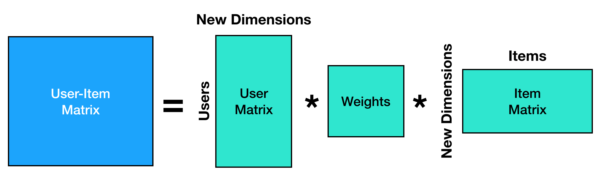
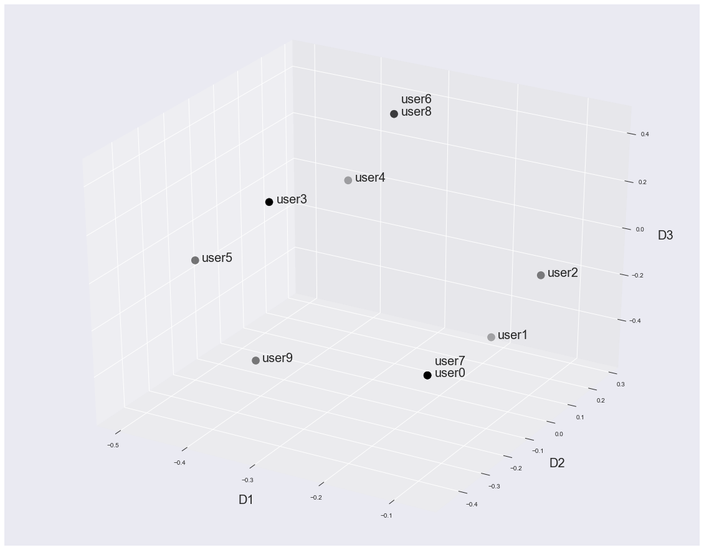
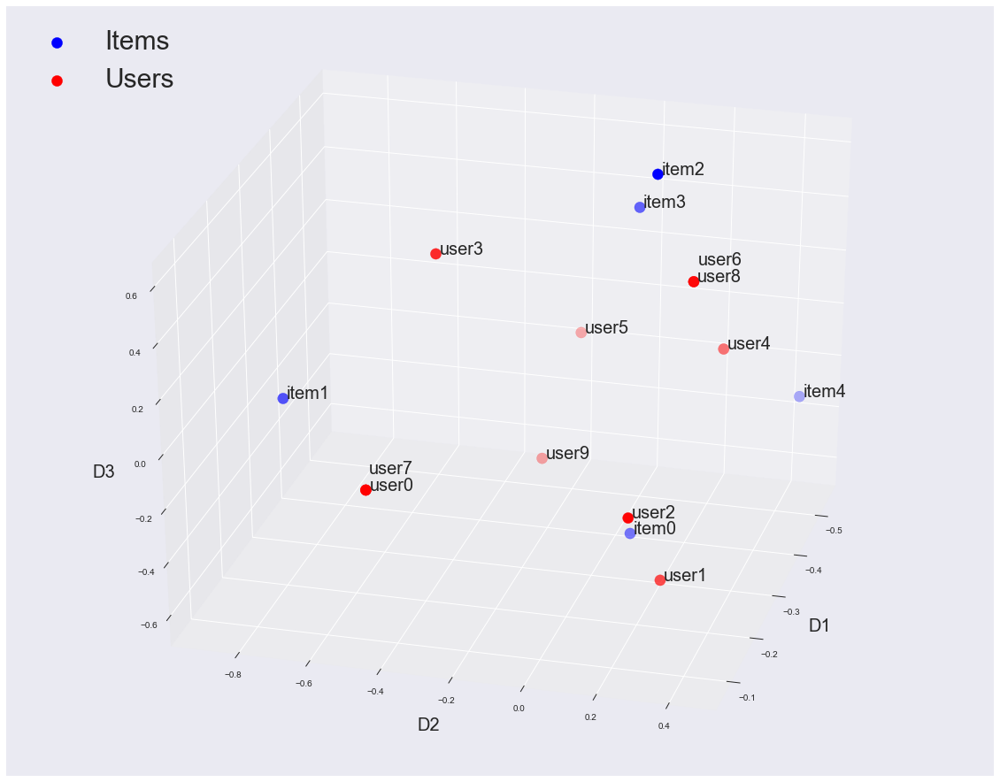

Recommendation Engines for Dummies
Nov. 17, 2017 - PythonRecommendation engines are an extremely integral part of modern business. You see them everywhere - Amazon, Netflix, Tinder - the list can go on forever. So, what really drives recommendation engines? Today we're going to take a quick look at one specific type of recommendation engine - collaborative filtering. This is the type of recommendation we would use for problems like, "what movie should I recommend you on Netflix?" We want to exploit the fact that people with similar tastes tend to rate the same movies highly (or lowly). For instance, if I really love Star Wars, it would make sense for the system to recommend Star Trek to me since it's another sci-fi series. That's the intuition we want to build upon - the correlation in tastes. To do this, we're going to rely on dimensionality reduction. Let's start by generating a very simple dataset to play with. To do this, I'll be using Pandas and Numpy, two wonderful python libraries. It's not super important that you understand those libraries to follow along with the rest of the blog. For now, just know that pandas is being used to control the table of data, and the numpy is being used to do a bunch of numeric calculations.
This code loops through however many times I tell it to and generates either a 1 or a 0 for each user-item pair. This creates a table that looks like so:
| item0 | item1 | item2 | item3 | item4 | |
|---|---|---|---|---|---|
| user0 | 0 | 1 | 0 | 0 | 0 |
| user1 | 1 | 0 | 0 | 0 | 1 |
| user2 | 0 | 0 | 0 | 0 | 1 |
| user3 | 0 | 1 | 1 | 1 | 0 |
| user4 | 1 | 0 | 1 | 1 | 1 |
| user5 | 1 | 1 | 1 | 1 | 1 |
| user6 | 0 | 0 | 1 | 1 | 1 |
| user7 | 0 | 1 | 0 | 0 | 0 |
| user8 | 0 | 0 | 1 | 1 | 1 |
| user9 | 1 | 1 | 0 | 1 | 1 |
In this dataset, we've got 10 users and 5 unique items. Each user has the ability to purchase the item. If they do, there is a "1" in their cell for that item, if they haven't purchased that item we'll leave it as a 0. Let's look at some of the important trends that we'll use as benchmarks for our recommendation engine:
1. Users that like item2 tend to also like item3.
2. User6 and User8 have the exact same preferences
So any engine we build should make sure that it thinks users 6 & 8 are very similar and that anyone who likes item2 is recommended item3 (and vice-versa).
To approach this, we're going to use Singular Value Decomposition (SVD). This is a technique where we'll take this user-item matrix and break it into 3 different matrices. We'll use these "other matrices" to make our recommendations - but first let's understand why we want to do this. When we do SVD, we're essentially finding a new way to represent our data. We can truncate this representation and only take the most important parts of the "new matrices." Let's take a look at a picture of these new matrices and see why this works.

If you multiply all these new matrices back together, we get a representation of the original data. For instance, if the number of "new dimensions" is equal to same value as the number of items (in this example - 5), then we would get a perfect representation of the data back. However, we don't have to take that many dimensions; we can actually take fewer dimensions. Let's see how we can do that in Python.
Here, U will be functioning as our "User-New Dimension" matrix and VT will function as our "New Dimension-Item" matrix. In this case, we're taking the top 3 most imporant dimensions to the dimensionality reduction (hence the [0:3] stuff). To actually do the SVD, we're relying on a great module from SciPy - the main idea here is that we calculate some eigenvalues and eigenvectors, then arrange them in a clever way - that's a topic for another time.
So now that we have this, what are these new dimensions?
Let's think about this like we're Netflix. Imagine that we have a bunch of users and movies, and we know which users rated which movies highly. When we do this dimensionality reduction, it tries to find correlations between all the movies and then make a new dimension that is comprised of the correlated movies. So for instance, if many users rated both Star Trek (all of the movies) and Star Wars very highly, the SVD could notice this correlation and try to combine them into one big dimension. I'm oversimplifying to some extent for the sake of intuition, a deeper discussion of this type of technique (often called principal component analysis) can be found here. This means that our new dimensions are going to be "concepts" like 'Sci-Fi' or 'Buddy Cop Movies.' But, most importantly, these concepts aren't things we have to define. The SVD will just pickup on correlations between user preferences and build it's own concepts. They may not be concepts we fully understand, but they will be important correlations. Let's see that in action - imagine we have this dataset:| Star Wars | Star Trek | Space Balls | Diehard | Lethal Weapon | Terminator | |
|---|---|---|---|---|---|---|
| user0 | 1 | 1 | 1 | 0 | 0 | 0 |
| user1 | 1 | 1 | 1 | 0 | 0 | 0 |
| user2 | 1 | 1 | 1 | 0 | 0 | 0 |
| user3 | 1 | 1 | 1 | 0 | 0 | 0 |
| user4 | 0 | 0 | 0 | 1 | 1 | 1 |
| user5 | 0 | 0 | 0 | 1 | 1 | 1 |
| user6 | 0 | 0 | 0 | 1 | 1 | 1 |
| user7 | 0 | 0 | 0 | 1 | 1 | 1 |
Lovely. Now let's do our SVD on this set and keep only two "concepts". What do we get as our outputs? Let's start by looking at the movies.
| 0 | 1 | |
|---|---|---|
| Star Wars | -0.00000 | -0.57735 |
| Star Trek | -0.00000 | -0.57735 |
| Space Balls | -0.00000 | -0.57735 |
| Diehard | -0.57735 | 0.00000 |
| Lethal Weapon | -0.57735 | 0.00000 |
| Terminator | -0.57735 | 0.00000 |
The movies have broken themselves into distinct concepts since users liked one group or the other! So we have a "sci-fi" concept and a "bad ass 80s guy" concept - although the machine only knows the concepts as "concept 1" and "concept 0." The negative values aren't important really, it's just a parameterization of the concept space so right now, we don't care about that. What about our users?
| 0 | 1 | |
|---|---|---|
| user0 | 0.0 | -0.5 |
| user1 | 0.0 | -0.5 |
| user2 | 0.0 | -0.5 |
| user3 | 0.0 | -0.5 |
| user4 | -0.5 | 0.0 |
| user5 | -0.5 | 0.0 |
| user6 | -0.5 | 0.0 |
| user7 | -0.5 | 0.0 |
Our users are also being put into that 2D concept space. The users that like the sci-fi movies show up as "on" for our sci-fi topic and "off" for our 80's badass movies. That's perfect - that means we can link our users to movies in the space. Note - this was a VERY cleaned up dataset to make a point. Things don't normally come out this clealy - for instance, if even one "sci-fi" user in this dataset liked Terminator, the concepts wouldn't have been so clean. However, the idea stays the same even with messy data. Now, let's get back to our example user-item dataset.
How can we use the concepts for recommendation?
If we look back at the matrix breakdown image, we now have an understanding of our users in terms of these "concepts" and our items in terms of these "concepts" thanks to the matrices U and VT. We can look at how our users and items came out in this new space, starting with our user matrix, U.| 0 | 1 | 2 | |
|---|---|---|---|
| user0 | -0.070822 | -0.457381 | -0.098917 |
| user1 | -0.206427 | 0.259666 | -0.541928 |
| user2 | -0.125017 | 0.222040 | -0.185270 |
| user3 | -0.295950 | -0.438107 | 0.440685 |
| user4 | -0.431556 | 0.278940 | -0.002326 |
| user5 | -0.502377 | -0.178441 | -0.101243 |
| user6 | -0.350146 | 0.241314 | 0.354332 |
| user7 | -0.070822 | -0.457381 | -0.098917 |
| user8 | -0.350146 | 0.241314 | 0.354332 |
| user9 | -0.400391 | -0.216394 | -0.443688 |
Woo! We have all 10 users represented in our 3-dimensional "concept" space. We have no idea what those concepts are, but we don't really care. For the recommendation engine to work, we just need every user and item to be mapped into the new space. If we look, we also see that users 6 and 8 have the same "concept" ratings across the board. That meets one of our criteria of making sure that users that are the same get the same ratings! Let's look at a plot of these users.

This looks promising. Let's check on the items (here we're actually looking at VT.T or VT_transpose).
| 0 | 1 | 2 | |
|---|---|---|---|
| item0 | -0.354165 | 0.073549 | -0.623270 |
| item1 | -0.308102 | -0.894073 | -0.172861 |
| item2 | -0.443679 | 0.074189 | 0.598433 |
| item3 | -0.535715 | -0.036512 | 0.344539 |
| item4 | -0.543874 | 0.434037 | -0.323766 |
Awesome, we have our items mapped into the same 3D space as well. Now we're ready to start making some recommendations. In this new space, items that have a similar set of likes (for instance items 2 & 3) actually end up being very near each other in the new space. That means if we measure the distance between item 2 and all the other items, we expect that item 3 will be the closest neighbor. So this code is going to use the dot product, which measures how close two items are. We'll see how close-by the items are - and then eventually we'll make recommendations by selecting whichever items are the closest. For the dot-product, the larger the number the closer more similar the items are.
Output:
Item 2 & 0: -0.210393502959
Item 2 & 1: -0.0330770642372
Item 2 & 3: 0.441160202546
Item 2 & 4: 0.0797539176545
Item 2 & 0: -0.210393502959
Item 2 & 1: -0.0330770642372
Item 2 & 3: 0.441160202546
Item 2 & 4: 0.0797539176545
Excellent! Items 2 & 3 are much closer than the others, which makes sense since they had very similar likes by our users! Now let's make sure that our system is putting our similar users close together as well.
Output:
User 6 & 0: -0.120624125842
User 6 & 1: -0.0570815992946
User 6 & 2: 0.0317086140787
User 6 & 3: 0.154052946777
User 6 & 4: 0.217595473325
User 6 & 5: 0.0969713474828
User 6 & 6: 0.306385686698
User 6 & 7: -0.120624125842
User 6 & 8: 0.306385686698
User 6 & 9: -0.0692362720077
User 6 & 0: -0.120624125842
User 6 & 1: -0.0570815992946
User 6 & 2: 0.0317086140787
User 6 & 3: 0.154052946777
User 6 & 4: 0.217595473325
User 6 & 5: 0.0969713474828
User 6 & 6: 0.306385686698
User 6 & 7: -0.120624125842
User 6 & 8: 0.306385686698
User 6 & 9: -0.0692362720077
Also great! Users 6 & 8 are showing up as the most similar and since they're identical they're showing up just as strong as "how similar is user6 to user6?" So now we can make some recommendations. Let's write a little piece of code that says, "which item do you want to find similar items to?" and then can return the most similar items.
Output:
[3, 4]
[3, 4]
For this code, we send in our item matrix (VT) and which item we want to get similar items for - and we see that it returns the two most similar (as seen above) items! We do the dot product and then we just sort everything so that the biggest similarities come first. Then we return just the top 2 (or whatever number the user asks for). Let's think about what we've done here: we've let our users do all the work by telling us what they like (by buying it). We just harnessed the power of that by thinking that people that buy the same things have the same tastes and exploiting it.
Remember, we've also mapped our users and our items into the same concept space, so we're also allowed to do dot products between users and items! That means if we want to know which items are most similar to the taste of a users, we just have to do a dot product between the user row and the item row! We can see that by looking at the space with all the items and users (you can even see items 2 and 3 together!).

This is a super powerful technique and was the basis for the model that won the Netflix Prize competition. The main concept is that when we reduce our data into a "concept" space, we can now understand how similar users and items are based on these hidden concepts. This "similarity" doesn't tell us whether they're similar items - but whether similar users buy them. This similarity forms the basis for all of our recommendations. This technique can also be expanded to huge datasets, because it works well with sparse matrices. An example implementation that I built can be found here.